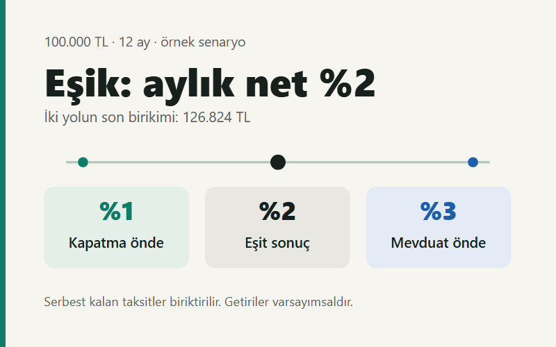

Kısa cevap: kalan borcun maliyeti belirleyici
Krediyi erken kapatmak, bugün ödeyeceğiniz kapatma tutarı karşılığında gelecekteki taksitlerden kurtulmanızı sağlar. Bu nakit akışının sağladığı avantaj, aynı sürede elde edebileceğiniz vergi ve masraf sonrası getiriden yüksekse kapatma matematiksel olarak öne çıkar. Ancak acil ihtiyaçlar için ayırdığınız parayı tüketmek, hesapta görünmeyen yeni bir borçlanma riski yaratabilir.
Kalan taksitlerin toplamı neden yeterli değil?
100.000 TL kapatma tutarıyla 113.471,52 TL kalan taksit toplamını karşılaştırıp aradaki 13.471,52 TL'yi doğrudan “yıllık kazanç” saymak yanıltıcıdır. İlk tutar bugün ödenir; ikincisi aylar boyunca parça parça. Paranın tutarı kadar ödeme tarihi de önemlidir. Ayrıca krediyi kapatınca her ay ödemeyeceğiniz taksidi biriktirebilirsiniz.
Adil bir karşılaştırmada iki yolun başlangıç parası, aylık bütçesi ve bitiş tarihi aynı olmalıdır. Krediyi sürdürürken 100.000 TL'yi mevduata koyup taksitleri gelirinizden ödüyorsanız, kapatma seçeneğinde de gelirinizin aynı kısmını her ay birikime ayırmalısınız. Bir tarafta bu birikimi yok saymak, diğer tarafı yapay biçimde avantajlı gösterir.
Daha önce ödediğiniz, geri alınamayan tahsis ücreti bugünkü karar açısından geçmişte kalmış bir maliyettir. Buna karşılık bugün tahsil edilecek kapatma gideri veya gerçekten alınabilecek bir prim iadesi karşılaştırmayı değiştirir. Kredi açılırken hesaplanan yıllık maliyet oranı, yeni kredi seçerken yararlıdır; mevcut krediyi kapatma kararında kalan ödemeleri yeniden değerlendirmek gerekir.
100.000 TL kredi için erken kapatma–mevduat karşılaştırması
Aşağıdaki örnek bir banka teklifi değildir. Hesabı görünür kılmak için 100.000 TL kalan anapara, 12 ay kalan vade ve aylık %2 efektif borç maliyeti varsayıyoruz. Eşit ödemeler ay sonunda yapılır. Hesap, bir taksit ödendikten hemen sonraki tarihte başlar; kapatma tazminatı, ek ücret ve sigorta iadesi yoktur. Vergiler için ayrıca oran uygulanmaz: %2, örnekteki bütün dönemsel borç maliyetini temsil eder.
Bu koşullarda aylık taksit yaklaşık 9.455,96 TL, kalan taksit toplamı 113.471,52 TL olur. Başlangıçta her iki seçeneğe ayrılan para 100.000 TL'dir:
- Krediyi kapat: 100.000 TL'yi bugün öde; ardından her ayın sonunda serbest kalan taksit kadar birikim yap.
- Krediyi sürdür: 100.000 TL'yi bugün yatırıma ayır; aynı aylık bütçeyi kredi taksidine harca.
Her iki yolda da 12. ay sonunda kredi borcu sıfırdır. Tablodaki tutarlar, bu tarihte elde kalan nominal birikimi gösterir. Yatırım getirileri stopaj ve giderlerden sonra net, aylık bileşik ve 12 ay boyunca sabit kabul edilmiştir; güncel mevduat oranı veya getiri tahmini değildir.

| Aylık net getiri | Kapat ve biriktir | Mevduat + kredi | Önde olan seçenek |
|---|---|---|---|
| %1 | 119.925,24 | 112.682,50 | Kapatma: 7.242,73 TL |
| %2 | 126.824,18 | 126.824,18 | Eşit |
| %3 | 134.199,26 | 142.576,09 | Mevduat: 8.376,83 TL |
Hesaplar tam hassasiyetle yapılmış, sonuçlar kuruşa yuvarlanmıştır; gösterilen sütunları çıkarmak 1 kuruş fark yaratabilir. Gerçek ödeme planında kuruş yuvarlamaları son taksidi değiştirebilir.
Hesabı nasıl yeniden kurabilirsiniz?
P kalan anapara, i aylık borç maliyeti, n kalan ay ve r aylık net yatırım getirisi olsun. Eşit taksit A = P × i / [1 − (1 + i)⁻ⁿ] formülüyle bulunur. Krediyi sürdürmenin son birikimi P × (1 + r)ⁿ; kapatıp her ay sonu biriktirmenin son birikimi ise A × [(1 + r)ⁿ − 1] / r olur. Net getiri sıfırsa ikinci ifade A × n'dir.
Masrafsız modelde r = i olduğunda iki yol eşitlenir. Aylık %2'nin yıllık bileşik karşılığı (1,02¹² − 1) × 100 ile yaklaşık %26,82'dir. Bu sayı bankanın ilan ettiği yıllık brüt mevduat oranıyla doğrudan karşılaştırılamaz. Önce aynı vadeye ve aynı net getiri tanımına geçmek gerekir; mevduatta net ve reel getiri rehberi bu ayrımı açıklar.
Erken kapatma tazminatı ve ara ödeme nasıl ele alınmalı?
Ticaret Bakanlığı, tüketici kredisinde borcun bir kısmının veya tamamının vadesinden önce ödenebileceğini ve erken ödenen tutara göre faiz ile diğer maliyetlerde gerekli indirimin yapılacağını açıklıyor. Bu nedenle bankadan belirli bir gün için geçerli kapatma dökümü isteyin; mobil uygulamadaki kalan taksit toplamını kapatma bedeli yerine kullanmayın. Kaynak: Tüketici kredisi bilgilendirmesi.
Konut finansmanında farklı bir kural vardır: sabit faizli sözleşmede hüküm bulunması koşuluyla, erken ödenen anapara üzerinden kalan vade 36 ayı aşmıyorsa en fazla %1, aşıyorsa en fazla %2 tazminat istenebilir. Tazminat, sağlanan toplam indirimden yüksek olamaz. Değişken faizli konut kredisinde erken ödeme tazminatı talep edilemez. Bu konut kuralını bütün kredi türlerine otomatik uygulamayın. Kaynak: Konut finansmanı bilgilendirmesi.
Tazminat varsa örnekteki 100.000 TL artık tek başına yeterli başlangıç bütçesi değildir. Kapatma seçeneğinde ödenecek ek tutarı, krediyi sürdürme seçeneğinin başlangıç yatırımına da ekleyerek bütçeleri eşitleyin. Aksi takdirde kıyas yine bozulur. Tazminat kapatmanın avantajını azaltır; kesinleşmiş bir geri ödeme ise artırır. İadenin tarihi de nakit akışına işlenmelidir.
Tamamını kapatmak yerine ara ödeme yapılabilir mi?
Bakanlığın tüketici kredisi rehberinde, en az bir taksit tutarındaki erken ödeme ara ödeme olarak açıklanır. Son taksitten itibaren işlemiş faiz ve ilgili yasal yükümlülükler ayrıldıktan sonra kalan tutar anaparadan düşülür; kalan taksit sayısı ve tarihleri korunarak yeni taksit planı oluşturulur. Bankanın sunduğu planı görmeden, ara ödemenin mutlaka vadeyi kısaltacağını varsaymayın. Kaynak: Ara ödeme açıklaması.
Kredi bağlantılı sigortada, erken kapatmayla birlikte poliçenin sonlandırılması ve kullanılmayan süreye ilişkin prim iadesi talep edilebilir. Poliçenin devamı da açık onayla mümkün olabilir. Kesin iade tutarını ve koşullarını banka veya sigortacıdan öğrenin. Kaynak: Sigorta primi açıklaması.
Matematiksel üstünlük tek başına karar değildir
Vade yenileme riski: Kredi taksitleri sabitken bir aylık mevduatın oranı her yenilemede değişebilir. Bugünkü net getirinin bir yıl boyunca korunacağını varsaymak, henüz gerçekleşmemiş bir beklentidir. En az bir düşük getiri senaryosu çalışın. Beklenen yatırım getirisi ile ödeme planından bilinen borç maliyeti aynı kesinliğe sahip değildir.
Nakit ihtiyacı: Krediyi kapatınca aylık yükünüz azalır; fakat başlangıç birikiminiz de azalır. Yakında oluşacak zorunlu harcamalar veya gelir kesintisi sizi daha pahalı bir krediye yöneltecekse, teorik tasarrufun bir kısmı kaybolabilir. Acil durum için ayıracağınız tutarı önce bütçeden çıkarın; tam kapatma, ara ödeme ve mevcut planı bu kalan tutarla karşılaştırın.
Birikim davranışı: Tablonun kapatma sütunu, serbest kalan taksidin düzenli yatırılmasını gerektirir. Bu para tüketilirse dönem sonu serveti tabloda gösterilenden düşük olur. Borçsuz kalmanın sağladığı rahatlık ayrı bir faydadır; bunu yatırım getirisiymiş gibi sayısallaştırmak yerine kararda ayrıca değerlendirin.
Enflasyon: İki seçeneğin aynı tarihteki nominal birikimini aynı fiyat endeksine bölmek, aralarındaki sıralamayı değiştirmez. Buna karşılık birikimin satın alma gücünü değiştirir. “Enflasyon borcu eritir” ifadesi, gelirinizin de aynı hızda artacağını garanti etmez; aylık ödeme gücünü ayrıca kontrol edin.
Kendi krediniz için beş adım
- Bankadan güncel anapara, kapatma bedeli, kalan taksitler ve ödeme tarihlerini alın.
- Tazminat, işlemiş faiz ve kesinleşen iadeleri ayrı satırlarda görün.
- Acil ihtiyaçlara ayrılacak paradan sonra kullanılabilir bütçeyi belirleyin.
- Yatırımın aynı dönem için net getirisini, düşük getiri senaryosuyla birlikte hesaplayın.
- İki seçeneği aynı başlangıç bütçesi ve aylık katkıyla karşılaştırın; nakit erişimini ayrıca değerlendirin.
Araçta kullanılan ödeme düzenini bankanın planıyla eşleştirin. Özellikle ara ödemede vadeyi kısaltan bir senaryo ile taksidi azaltan teklif aynı değildir. Henüz kredi seçiyorsanız kredi maliyeti hesaplama aracından; birden fazla borç ve birikim hedefini değerlendiriyorsanız borç mu, birikim mi aracından başlayabilirsiniz.
Kaynaklar, yöntem ve kapsam
- T.C. Ticaret Bakanlığı — Tüketici Kredisi Sözleşmeleri Hakkında Bilgilendirme: erken ödeme, ara ödeme ve kredi bağlantılı sigorta.
- T.C. Ticaret Bakanlığı — Konut Finansmanı Sözleşmeleri Hakkında Bilgilendirme: sabit ve değişken faizli konut kredilerinde tazminat koşulları.
Kaynak kontrolü: . Sayısal örnek, yukarıdaki eşit taksit ve bileşik getiri formüllerinden üretilmiştir; piyasa verisi kullanılmamıştır. Tutarlar banka ödeme planı değildir. Bu yazı bireysel kredi kararının yöntemini açıklar; ticari kredileri, gecikmiş borçları ve yeniden finansmanın tüm masraflarını kapsamaz.
İçerik genel bilgilendirme amaçlıdır; kişiye özel yatırım veya hukuk danışmanlığı değildir. Hata bildirimi ve kaynak yaklaşımı için yayın ilkelerine ve iletişim sayfasına ulaşabilirsiniz.